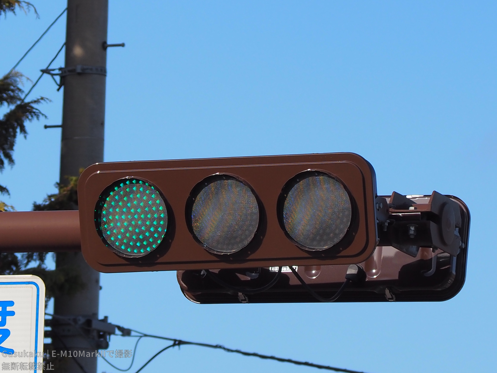
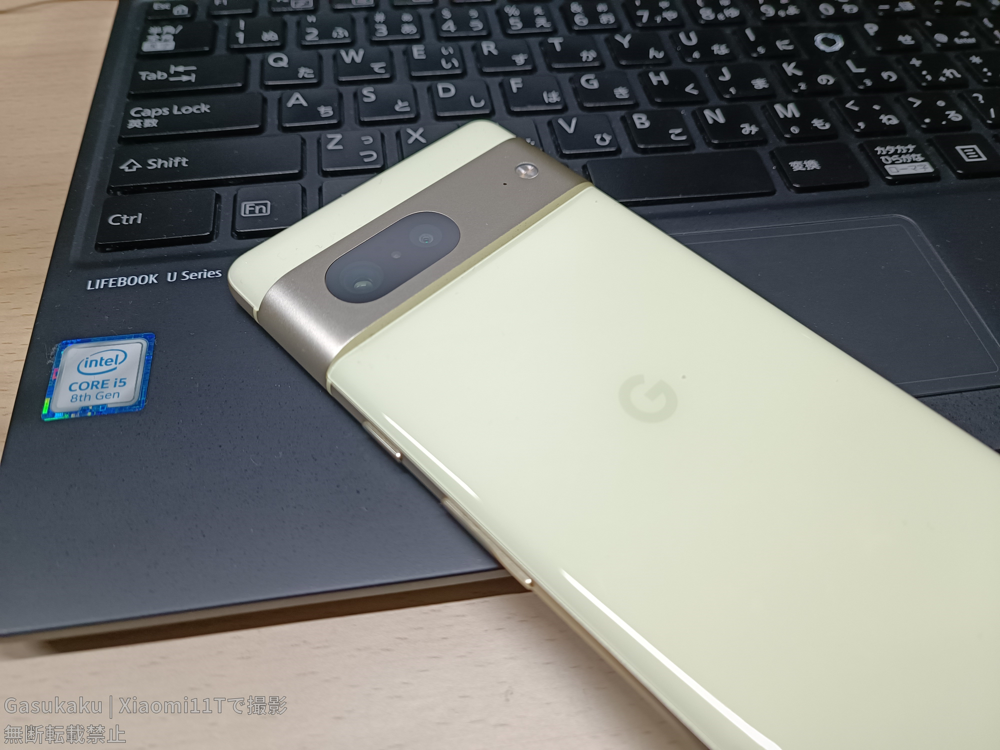

Welcome to Gasukaku Homepege!
信号機やガジェット系動画を投稿している「Gasukaku」のホームページです。person About me
信号機やガジェットが好きな学生です。たまに撮り信に行ったり...
スマホメーカーはXiaomiが結構好きです。
中1の時にラムダ技術部の動画を見てHTMLにはまり、2021年9月にGlitchで初めてホームページを公開しました。今ではYoutubeやInstagramなどでも活動しています。
 2021年10月に思いつきで開設した信号機ホームページ「信号好きが集まるページ」のデザインがあまりにも適当すぎて自分でも嫌になったため、2022年3月に「AMS Signal」を開設しました。
「信号機好きがあつまるページ」は最初は情報とかのみでしたが、2022年にカメラをゲットしてから本格的に撮り信を初めました。撮り信環境紹介
brand_awareness
News
2024/04/01 ホームページをリニューアルしました
done以上で全てです。
mail Contact
お問い合わせは以下リンクのフォーム又はメールアドレスまでお願いします。X等のDMでも受け付けています。
メールアドレス：contact☆gasukaku.net
※迷惑メール防止のために@を☆に置き換えています。